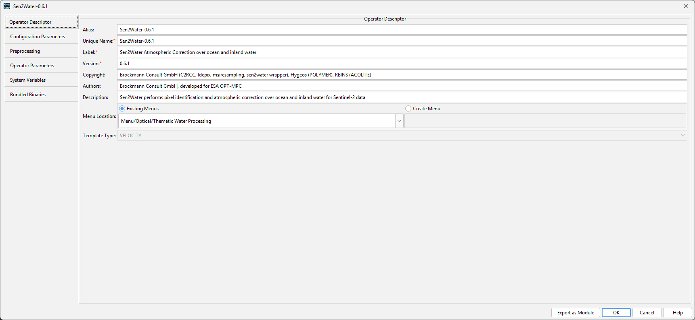
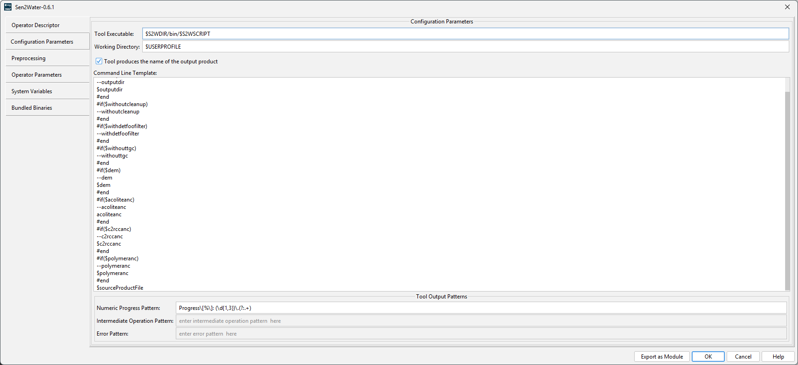
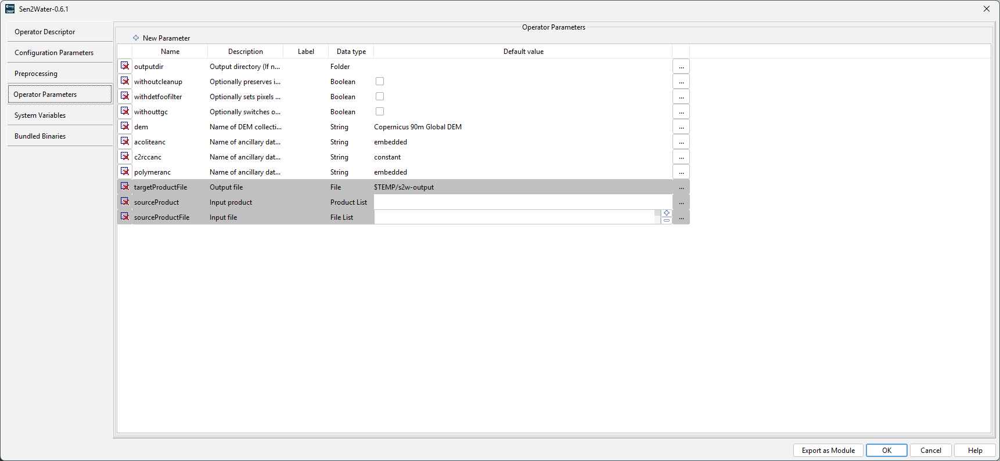
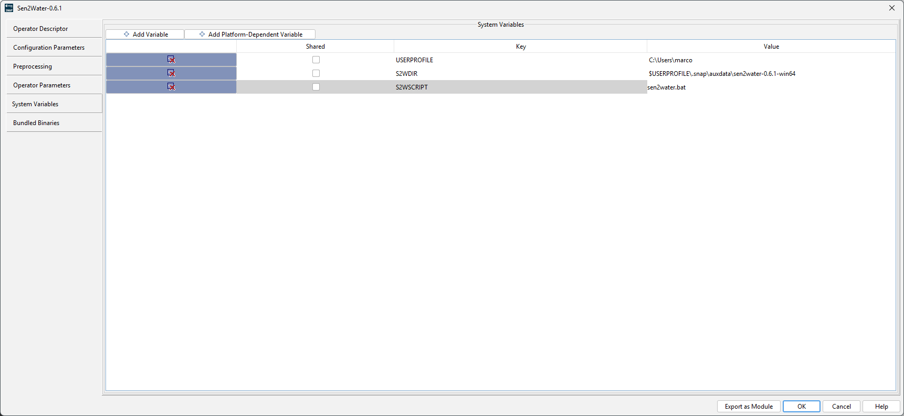
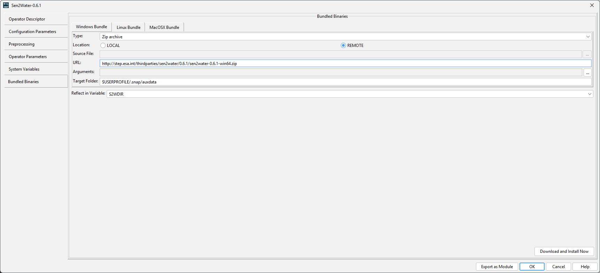

| Sen2Water - Configuring the Sen2Water adapter in SNAP | |
After installing the Adapter plugin, the actual Sen2Water processor bundle needs to be downloaded and installed too. This download is more than >2GB.
To do so, you need to go to Tools->Manage External Tools and select the Sen2Water processor and click
Edit. On the left side, select the Bundle Binaries tab and click the Download and Install
Now button in the lower-right.
After the installation succeeds, the processor is configured and ready to
use.
Usually you don't have to modify the configuration options. However, the most important options are briefly described below.
Operator DescriptorHere the general information of the processor are provided. The name, the alias (name for gpt), the description, where the processor shall show up in the menu and other information. |
 |
||||||
Configuration ParametersThis panel contains information on how the processor is executed. It contains the path to the executable, the working directory which shall be used and the command line parameters as velocity template. The template is parsed and evaluated before passing the parameters to the command line. |
 |
||||||
Operator ParametersThis panel defines the parameters which are shown in the user interface and evaluated by the velocity template defined in the Configuration tab. |
 |
||||||
System Variables The system variables define general and operating system dependent variables.
|
 |
||||||
Bundle Binaries This tab has the path to the remote location where the bundle will be downloaded from. After download, it will
also install the bundle. To start the process, you have to click on the |
 |
||||||
NOTE
The Windows version is experimental because POLYMER does not support Windows
out-of-the-box. It requires that the
is installed.